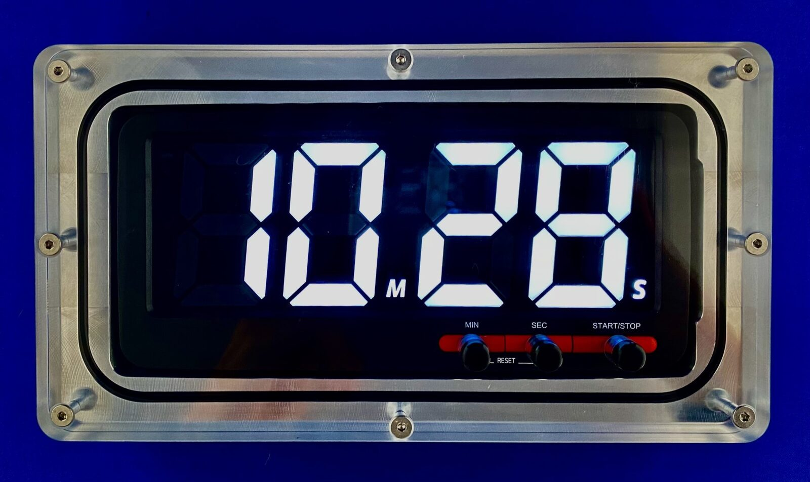
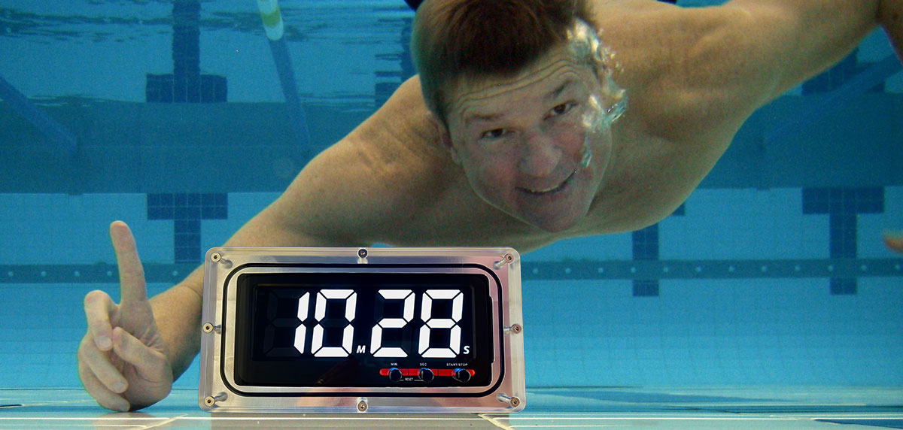
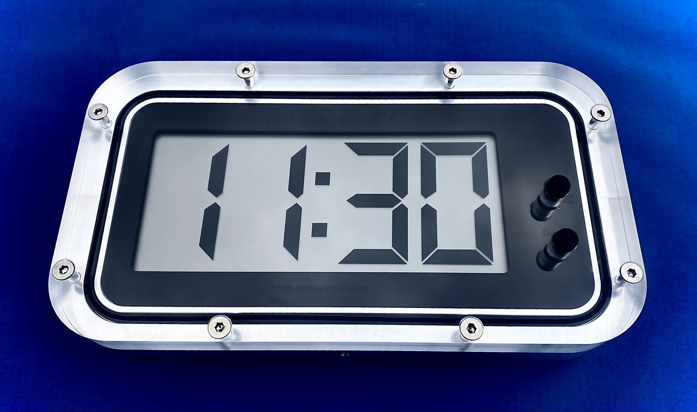
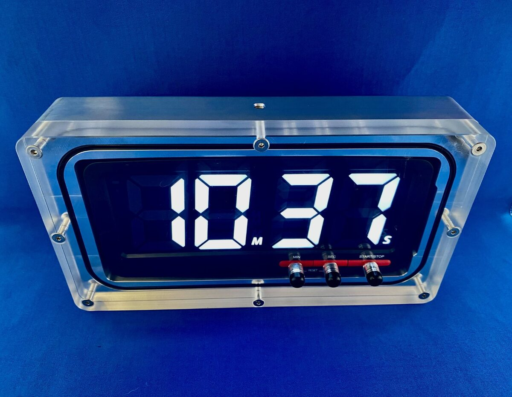
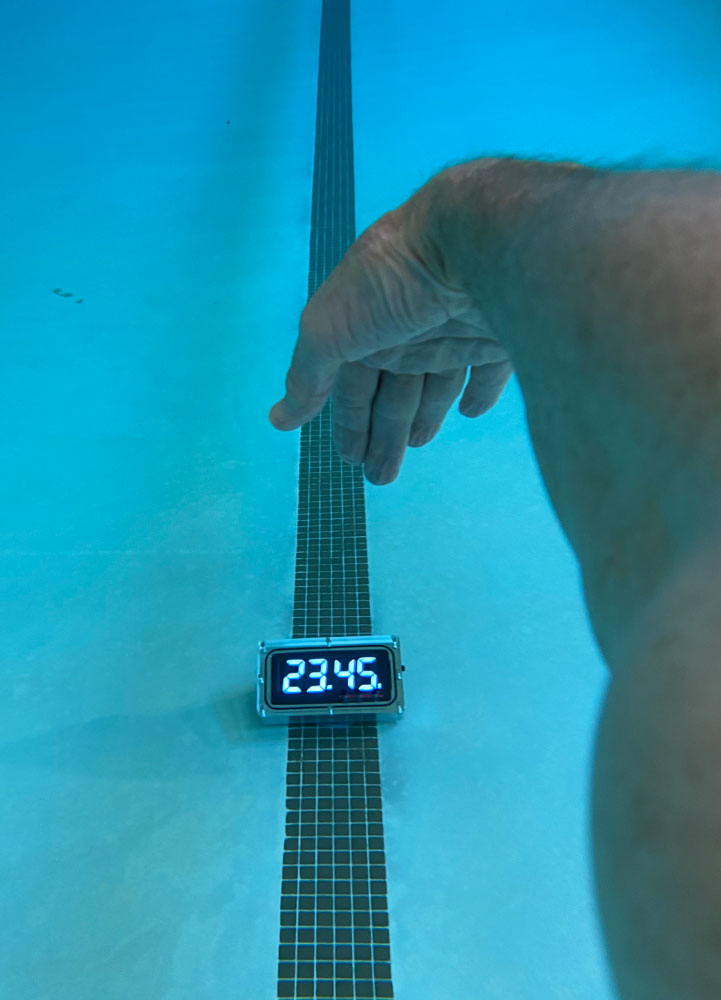
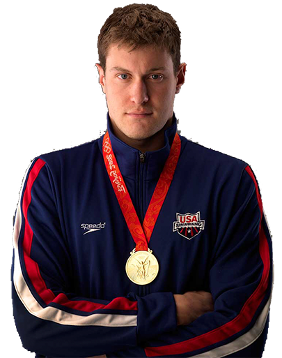

LED · Light-emitting digits
For indoor pools, low light and deep water
Glowing LED digits with three brightness levels. The brightest, most visible option.
$465 USD
LED details

Underwater pace clock
Stop lifting your head to find the wall clock. PACE PAL® sits on the bottom of the pool, right in your line of sight, with bold digits you can read 25 yards away, even with goggles on, even underwater.
Designed & milled in the USA · 60-day refund
Both sit on the bottom of the pool, in your line of sight. The difference is the display.

LED · Light-emitting digits
Glowing LED digits with three brightness levels. The brightest, most visible option.

LCD · Reflects ambient light
High-contrast bold black digits on silver, where ambient light does the work.
A deck clock only helps if you break your stroke to read it: lift your head, drop your hips, and lose the back half of the lap. In a flow-current pool there's nowhere to put one at all. So most swimmers guess their pace and train in second gear.
PACE PAL® fixes all three. It sits on the bottom of the pool, in your line of sight, so you hold pace without breaking position.
The display
Tap a mode to watch it run, the way it runs on the bottom of your lane.

Built for the water
Specs shown for the LED clock. LCD specs

Set it & swim
Weighing in at about 5 lbs, PACE PAL® sits stable on the pool bottom. The included double-sided multi-suction silicone pad locks it to smooth surfaces, including the bottom mirror of flow-current pools like Endless Pools®.
Train with intent
Ultra-Short Race-Pace Training lives and dies by the clock. PACE PAL® puts your send-off right in your line of sight, so you hold pace rep after rep without squinting at the wall.

Official endorser
4× Olympic medalist · 2× Olympic gold
A University of Michigan great with five NCAA titles and four Olympic medals, Peter used Pace Pal for six months before agreeing to endorse it. He's joined by Olympic coach Gregg Troy and Michigan's Mike Bottom.
“I just love it and use it every time I am in my Endless Pool.”
“Pace Pal clocks have been a real plus for our program. They’ve allowed our athletes to be more aware of their timing in practice.”
“LOVE my new Pace Pal® digital pace-clock that sits right at the end of my lane… or even underwater! Larry Day, you are a genius.”
“I’ve been a swimmer most of my life and always wanted a highly visible pace clock on the bottom of the pool. So I created PACE PAL®.”
Try PACE PAL® for 60 days. If it's not the most visible clock you've ever trained with, send it back for a full refund. No questions asked.